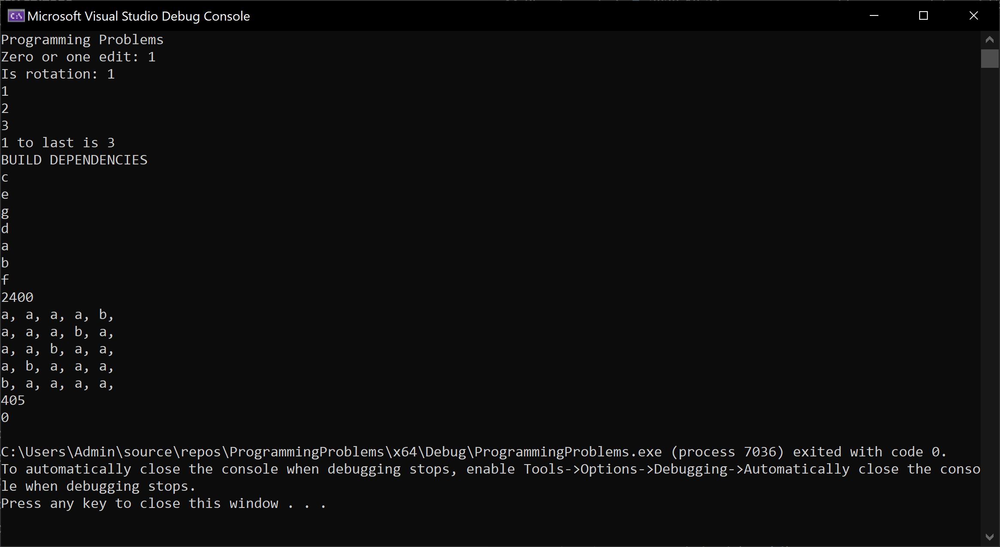
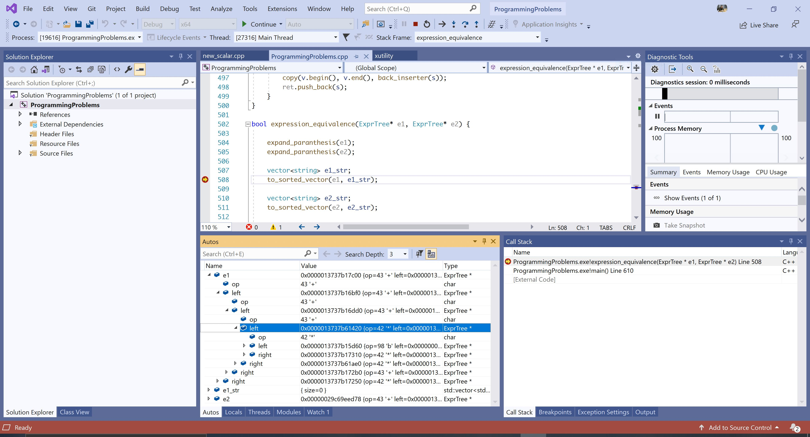

Programming Problems In C++
This post is a collection of several programming problems implemented in C++. It's good to keep the edge sharp by solving some algorithmic problems from time to time.
Here are all the problems running in the same executable file:

Problem 1 - Zero Or One Edits Away
Write an algorithm that will return true if a string is zero or one edits away from another string. An edit is a letter changed or deleted. The algorithm should be invoked as:
cout << "Zero or one edit: " << zero_one_edits_away("hello", "hello") << endl;
or
cout << "Zero or one edit: " << zero_one_edits_away("helo", "hello") << endl;
and both should return true.
The solution below:
using namespace std;
bool zero_one_edits_away(const string& s1, const string& s2) {
int l1 = (int)s1.length();
int l2 = (int)s2.length();
if (abs(l1 - l2) > 1)
return false;
int edit_count = 0;
for (int i = 0, j = 0; i < l1 && j < l2; i++, j++) {
if (s1[i] == s2[j])
continue;
if (edit_count == 1) return false;
else edit_count++;
if (l1 == l2) continue;
else if (l1 < l2) j++; // it can only be a delete
else i++;
}
return true;
}
Problem 2 - String Rotation
Write an algorithm that, given two strings, will return true if one string is a rotation of the other one and false otherwise. The algorithm should be invoked as:
cout << "Is rotation: " << is_rotation("wwaterbottleww", "bottlewwwwater") << endl;
and in the case above should return true. The solution written below:
bool is_rotation(const string& s1, const string& s2) {
if (s1.length() != s2.length()) return false;
int start_of_match = -1;
unsigned i = 0;
unsigned j = 0;
for (j = 0; j < s2.length(); j++) {
if (s1[i] != s2[j]) {
if (start_of_match != -1) {
j -= (j - start_of_match);
}
start_of_match = -1;
i = 0;
continue;
}
else if (start_of_match == -1)
start_of_match = j;
i++;
}
// last part of the string matched
if (j == s2.length() && start_of_match == -1)
return false;
// check the first part
const char* cs1 = s1.c_str();
const char* cs2 = s2.c_str();
return strncmp(cs1 + i, cs2, start_of_match) == 0;
}
Problem 3 - Remove Duplicates
Given a list of of numbers, remove duplicates without breaking the order in the list. The algorithm should be invoked as:
auto lst = remove_duplicates({ 1, 1, 2, 2, 3, 3, 1, 1, 1, 2 });
for (auto l : lst) {
cout << l << ", ";
}
and it should print 1, 2, 3.
The constraint to not break the order does not allow us to sort the list before removal of the duplicates, which forces us into a O(n^2) solution. We are going to use the std::list structure which allows in-place removal of an element without breaking the iterators. Since std::list is doubly linked, another slightly lighter solution could involve the std::forward_list:
auto remove_duplicates(const std::initializer_list<int>& l) {
list<int> lst = l;
for (auto i = lst.begin(); i != lst.end(); i++) {
auto j = i;
j++;
for (;j != lst.end();) {
auto tmp = j++;
if (*i == *tmp) {
lst.erase(tmp);
}
}
}
return lst;
}
Problem 4 - K-to-last
Write an algorithm which prints the k-to-last element in a singly linked list. Since we don't know the number of elements in the list, nor can we traverse it backwards, we need to parse the whole list and keep two pointers at k elements apart. The algorithm should be invoked as:
int n = -1;
int k = 1;
if (k_to_last({ 1, 2, 3, 4 }, k, n)) {
cout << k << " to last is " << n << endl;
}
else {
cout << "k > length(array)" << endl;
}
The solution:
bool k_to_last(const std::initializer_list<int>& l, const int k, int& ret) {
forward_list<int> lst = l;
auto it1 = lst.begin();
auto it2 = lst.begin();
const int k_upd = k + 1;
int i = 0;
for (; it1 != lst.end() && i < k_upd; i++, it1++);
if (it1 == lst.end() && i < k_upd)
return false; // not enough elements
for (; it1 != lst.end(); it1++, it2++);
ret = *it2;
return true;
}
Problem 5 - Build Dependencies
Given a list of builds, with dependencies between each other, write a program that finds the right compilation order such that each dependency is compiled before its dependents. Here is the example invocation, with first build depending on the builds sent as the second parameter.
cout << "BUILD DEPENDENCIES" << endl;
map<char, list<char>> dependencies;
dependencies.emplace('a', initializer_list<char>({ 'd' }));
dependencies.emplace('f', initializer_list<char>({ 'b', 'a', 'e'}));
dependencies.emplace('b', initializer_list<char>({ 'd' }));
dependencies.emplace('d', initializer_list<char>({ 'c' }));
dependencies.emplace('g', initializer_list<char>({ }));
make_builds(dependencies);
try {
for (auto l : build_dependencies()) {
cout << l << endl;
}
}
catch (const char* exx) {
cout << exx << endl;
}
clear_builds();
In this case, the printed solution should be:
BUILD DEPENDENCIES
c
e
g
d
a
b
f
The algorithm below:
enum BuildState {
NOT_TOUCHED = 0,
UNDER_CHECK = 1,
CAN_BE_BUILT = 2
};
struct build {
build(char _id) :
id(_id),
build_state(NOT_TOUCHED)
{
}
char id;
BuildState build_state;
list<build*> dependencies;
};
map<char, build*> builds;
void make_builds(const map<char, list<char>>& prjs) {
for (auto p : prjs) {
auto it = builds.find(p.first);
if (it == builds.end())
it = builds.emplace(p.first, new build(p.first)).first;
for (auto d : p.second) {
auto dps = builds.find(d);
if (dps == builds.end())
dps = builds.emplace(d, new build(d)).first;
it->second->dependencies.push_back(dps->second);
}
}
}
void clear_builds() {
for (auto b : builds) {
auto* tmp = b.second;
b.second = nullptr;
delete tmp;
}
builds.clear();
}
list<char> build_dependencies(const list<build*>& projects) {
list<char> ret;
// start building in parallel those that don't have dependencies
for (auto& p : projects) {
if (p->build_state == CAN_BE_BUILT)
continue;
if (p->build_state == UNDER_CHECK)
throw "cannot build - circular dependencies";
if (p->dependencies.size() == 0) {
p->build_state = CAN_BE_BUILT;
ret.push_back(p->id);
}
}
// finish with the rest of them
for (auto& p : projects) {
if (p->build_state == CAN_BE_BUILT)
continue;
if (p->build_state == UNDER_CHECK)
throw "cannot build - circular dependencies";
p->build_state = UNDER_CHECK;
for (auto& d : p->dependencies) {
auto lst = build_dependencies(p->dependencies);
copy(lst.begin(), lst.end(), back_inserter(ret));
}
p->build_state = CAN_BE_BUILT;
ret.push_back(p->id);
}
return ret;
}
list<char> build_dependencies() {
list<build*> prjs;
for (auto b : builds)
prjs.push_back(b.second);
return build_dependencies(prjs);
}
Problem 6 - Recursive Multiply
Write a program that performs multiplication without using the * symbol while minimizing the number of operations. The only allowed operators are +, -, << and >>.
// recursive multiply without using *, just +, -, <<, >>
cout << recursive_multiply(100, 24);
The solution below:
int recursive_multiply(int a, int b) {
// take the largest number to add
if (a < b)
swap(a, b);
int sum = a;
int b_first = b;
int i = 0;
for (; b > 1; b = b >> 1, i++)
sum += sum;
b = b_first - (1 << i);
if (b > 1)
sum += recursive_multiply(a, b);
else if (b == 1)
sum += a;
return sum;
}
Problem 7 - All Permutations, No Duplicates
Given a string, write all possible permutations of that string elimiating duplicates. For instance, for the following invocation,
// permutations without duplicates
all_permutations_no_duplicates("aaaab");
the printed solution should be:
a, a, a, a, b,
a, a, a, b, a,
a, a, b, a, a,
a, b, a, a, a,
b, a, a, a, a,
The solution involves keeping the count of each duplicated letter so we don't include it as a different symbol for each permutation:
void all_permutations_no_duplicates(vector<char> ¤t, vector<char>& str, vector<int> &counts) {
bool any = false;
// can be done with forward_list<> insert and erase @ it
for (int i = 0; i < str.size(); i++) {
if (counts[i] > 0) {
current.push_back(str[i]);
counts[i] --;
all_permutations_no_duplicates(current, str, counts);
counts[i] ++;
current.pop_back();
any = true;
}
}
if (!any) {
for (auto c : current)
cout << c << ", ";
cout << endl;
};
}
void all_permutations_no_duplicates(const string& str_) {
vector<char> v;
vector<int> cnts;
vector<char> c;
string str = str_;
sort(str.begin(), str.end());
// build counts
char prev_c = 0;
for (auto c : str) {
if (prev_c != c) {
v.push_back(c);
cnts.push_back(1);
}
else {
cnts[cnts.size() - 1] ++;
}
prev_c = c;
}
cout << endl;
all_permutations_no_duplicates(c, v, cnts);
}
Problem 8 - Stacks of Boxes
Given a list of boxes, find the highest tower that can be built by stacking boxes on top of each other. A box can be stacked on top of another box only if all its dimensions, width, depth and height, are smaller than those of the box below.
For solving the problem we will start by generating an array of 100 boxes, all with randomly generated dimensions.
The algorithm is started by:
cout << stack_of_boxes() << endl;
The solution below:
struct Box {
Box(int w_, int l_, int h_) : w(w_), l(l_), h(h_){
}
int w, l, h;
bool sorter(const Box& b) const {
return w > b.w;
}
bool can_stack(const Box& b) const {
return w > b.w && h > b.h && l > b.l;
}
};
struct Stack {
Stack(int b, int h, shared_ptr<Stack> next_) : base_box(b), height(h), next(next_) {}
int base_box;
int height;
shared_ptr<Stack> next;
};
int stack_sorted_boxes(
list<shared_ptr<Stack>>& s,
const map<int,
vector<int>>& can_stack,
const vector<Box> &v) {
bool added = false;
int max_height = 0;
// it is basically a deque
for (auto i = s.begin(); i != s.end();) {
auto stackables = can_stack.find((*i)->base_box);
// cannot stack anything on top, this is the end of the stack
if (stackables == can_stack.end()) {
if (max_height < (*i)->height)
max_height = (*i)->height;
}
else {
for (auto j : stackables->second) {
// here we don't really need the last parameter
// if we are only returning the stack height and not the stask itself
s.push_back(make_shared<Stack>(j, (*i)->height + v[j].h, *i));
}
}
i = s.erase(i); // I already put something on top of it
added = true;
}
return max_height;
}
int stack_of_boxes() {
vector<Box> v;
// randomly generate 100 boxes
for (int i = 0; i < 100; i++) {
v.emplace_back(rand() % 100, rand() % 100, rand() % 100);
}
sort(v.begin(), v.end(), [](const Box& b1, const Box& b2) {
return b1.sorter(b2);
});
map<int, vector<int>> can_stack;
// generate a list of boxes that can be stacked upon each other
for(int i = 0; i < v.size(); i++)
for (int j = i; j < v.size(); j++) {
if (v[i].can_stack(v[j]))
can_stack[j].push_back(i);
}
list<shared_ptr<Stack>> stacks;
for (int i = 0; i < v.size(); i++) {
stacks.push_back(make_shared<Stack>(i, v[i].h, shared_ptr<Stack>()));
}
return stack_sorted_boxes(stacks, can_stack, v);
}
Problem 9 - Expression Equivalence
Given two expressions, a * (b + c) and a * b + a * c, write an algorithm that will determine if the two expressions are equivalent. In our case above, the two expressions are equivalent.
The solution implies expanding the parantheses and bringing the expression to a cannonical form, a sum of products. To shortcut the parsing, we will consider the expression is given in the form of an expression tree, (left operand, operation, right operand). After the expression is brought to the cannonical form, each term is sorted alphabetically and then all all terms are again sorted. Then we simply compare the strings in order to decide whether the two expressions are equivalent.
The algorithm is started by defining expressions as follows:
ExprTree e1(
'*',
new ExprTree('*', new ExprTree('+', 'a', 'b'), new ExprTree('a')),
new ExprTree('*', new ExprTree('+', 'a', 'b'), new ExprTree('a'))
);
ExprTree e2(
'*',
new ExprTree('+', 'a', 'b'),
new ExprTree('+', 'a', 'b')
);
ExprTree e3(
'*',
new ExprTree(
'*',
new ExprTree('+', 'a', 'b'),
new ExprTree('+', 'a', 'b')
),
new ExprTree(
'*',
new ExprTree('+', 'a', 'b'),
new ExprTree('+', 'a', 'b')
)
);
// or creating a random tree for faster testing
ExprTree* e4 = ExprTree::make_random_tree();
cout << expression_equivalence(e4, &e3) << endl;
delete e4
As a complication, the algorithm must not generate any memory leaks and must use C-style pointers.
Below is the full solution:
struct ExprTree {
ExprTree(char _op, ExprTree* _left = nullptr, ExprTree* _right=nullptr) :
op(_op), left(_left), right(_right){
}
ExprTree(char _op, char a, char b) {
op = _op;
left = new ExprTree(a);
right = new ExprTree(b);
}
~ExprTree() {
if(left != nullptr)
delete left;
if(right != nullptr)
delete right;
}
ExprTree* deep_copy() {
return new ExprTree(op,
left ? left->deep_copy() : nullptr,
right ? right->deep_copy() : nullptr);
}
// utility function to generate a random tree
// not part of the algorithm
static ExprTree* make_random_tree() {
float f = ((float)rand() / (float)RAND_MAX);
if(f < 0.3)
return new ExprTree('a');
if (f < 0.6)
return new ExprTree('b');
if (f < 0.8)
return new ExprTree('*', make_random_tree(), make_random_tree());
return new ExprTree('+', make_random_tree(), make_random_tree());
}
char op;
ExprTree* left;
ExprTree* right;
};
void expand_paranthesis(ExprTree* start) {
if (start->op != '+' && start->op != '*')
return; // terminal symbol
// we need to start with the recursion condition in order
// to bubble up the +'es. we cannot have a * above a +
expand_paranthesis(start->left);
expand_paranthesis(start->right);
if (start->op == '*') {
auto tmpop = start->op;
// (a + b) * (a + b)
if (start->right->op == '+' && start->left->op == '+') {
start->op = '+';
auto tmp_left_a = start->left->left;
auto tmp_right_a = start->right->left;
auto tmp_left_b = start->left->right;
auto tmp_right_b = start->right->right;
start->left = new ExprTree('+',
new ExprTree('*', tmp_left_a, tmp_right_a),
new ExprTree('*', tmp_left_a->deep_copy(), tmp_right_b));
start->right = new ExprTree('+',
new ExprTree('*', tmp_left_b, tmp_right_a->deep_copy()),
new ExprTree('*', tmp_left_b->deep_copy(), tmp_right_b->deep_copy()));
}
// a * (b + c)
else if (start->right->op == '+') {
start->op = '+';
auto deep_copy_left = start->left->deep_copy();
start->left = new ExprTree('*', start->left, start->right->left);
start->right = new ExprTree('*', deep_copy_left, start->right->right);
}
//(b + c) * a
else if (start->left->op == '+') {
start->op = '+';
auto tmp = start->left;
auto start_right_copy = start->right->deep_copy();
start->left = new ExprTree('*', tmp->left, start->right);
start->right = new ExprTree('*', tmp->right, start_right_copy);
}
// what has been arranged before is
// no longer arranged because we changed the structure of the tree
if (tmpop != start->op) {
expand_paranthesis(start->left);
expand_paranthesis(start->right);
}
}
}
void get_set(ExprTree* e, vector<char>& s) {
if (e->op == '*') {
get_set(e->left, s);
get_set(e->right, s);
}
else {
s.push_back(e->op);
}
}
void to_sorted_vector(ExprTree* e, vector<string> & ret) {
if (e->op == '+') {
to_sorted_vector(e->left, ret);
to_sorted_vector(e->right, ret);
}
else if (e->op == '*') {
vector<char> v;
get_set(e->left, v);
get_set(e->right, v);
string s;
sort(v.begin(), v.end());
copy(v.begin(), v.end(), back_inserter(s));
ret.push_back(s);
}
}
bool expression_equivalence(ExprTree* e1, ExprTree* e2) {
expand_paranthesis(e1);
expand_paranthesis(e2);
// each term is sorted alphabetically
vector<string> e1_str;
to_sorted_vector(e1, e1_str);
vector<string> e2_str;
to_sorted_vector(e2, e2_str);
// all terms are sorted alphabetically
sort(e1_str.begin(), e1_str.end());
sort(e2_str.begin(), e2_str.end());
auto it1 = e1_str.begin();
auto it2 = e2_str.begin();
// simple pairwise comparison
for (; it1 != e1_str.end() && it2 != e2_str.end(); it1++, it2++) {
if (*it1 != *it2) return false;
}
return it1 == e1_str.end() && it2 == e2_str.end();
}
Below you can see the algorithm running in Visual C++ with the expression expanded. You can notice that all +-es are above * in the reorganized expression tree.
